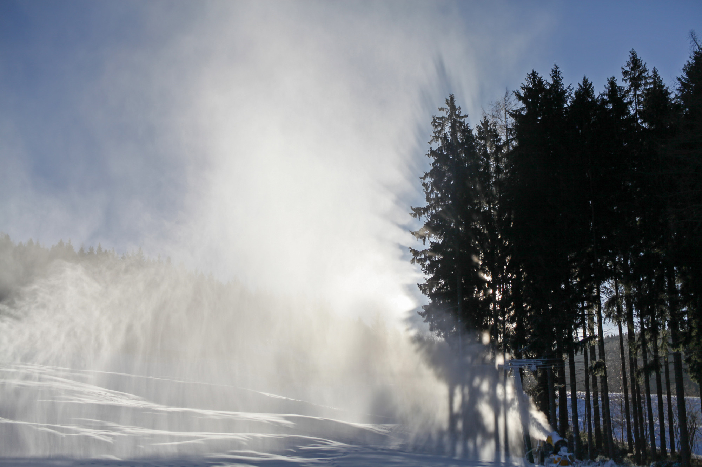
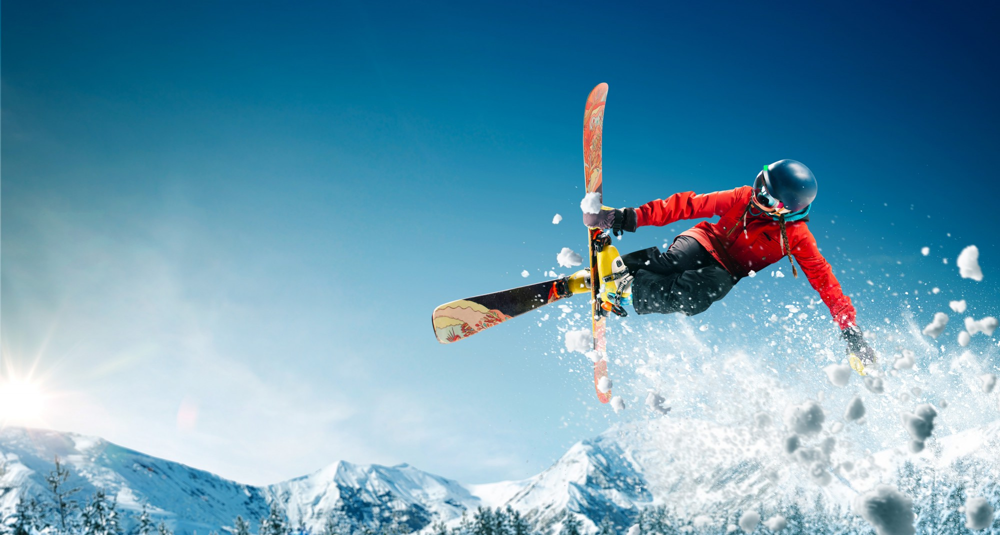

Home / Anreise
So finden Sie uns
Planen Sie Ihre Anreise zur Schwabenbergarena Turnauer Skilifte – einfach, schnell und komfortabel.
Wir wünschen Ihnen eine gute Anreise und freuen uns auf Sie!

Routenplaner
Nutzen Sie den Google-Maps-Routenplaner, um Ihre individuelle Anreise zur Schwabenbergarena zu berechnen – mit Echtzeit-Verkehrsdaten für eine entspannte Anfahrt.